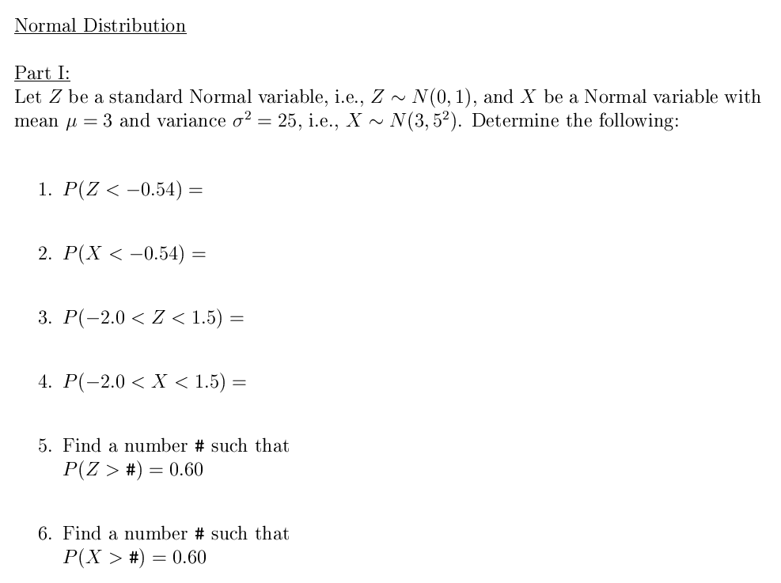
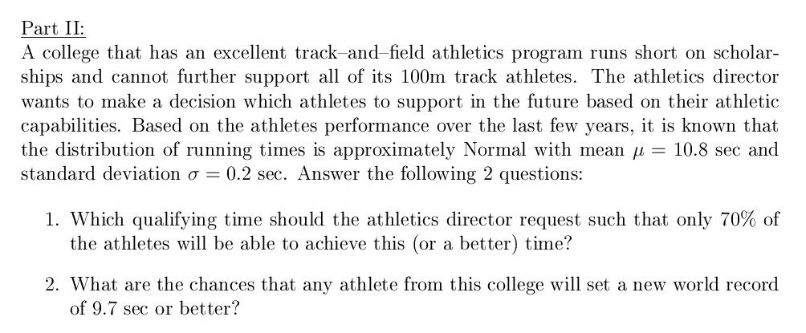

Stat 2000, Section 002, Homework Assignment 13 (Due 12/6/2001 11:59pm)
- 0) Reading: CyberStats
- Unit B-9 -- Normal Distribution
Review of old Homeworks, Lecture Notes, and Handouts for the Final.
- 1) Please work on the following CyberStats exercises:
- Unit B-9 -- Normal Distribution,
Exercises 1.1 - 1.19, 2.20 - 2.32, 2.40 - 2.41 (1/2 Point each)
- 2) Revisit Homework Assignment 12, Exercise 3). (2 Points)
- What is the probability p(y) to gain (or lose) y points?
- One student missed Quiz 2. What is the expected point gain/point loss
for this student? And what is the variance?
- Assuming a bell-shaped curve, in which interval (centered around
the mean) would 95% of future observations from the same distribution
fall (e.g., students from another session of the same course, that
did not take Quiz 2 yet)?
- 3) (6 Points)

